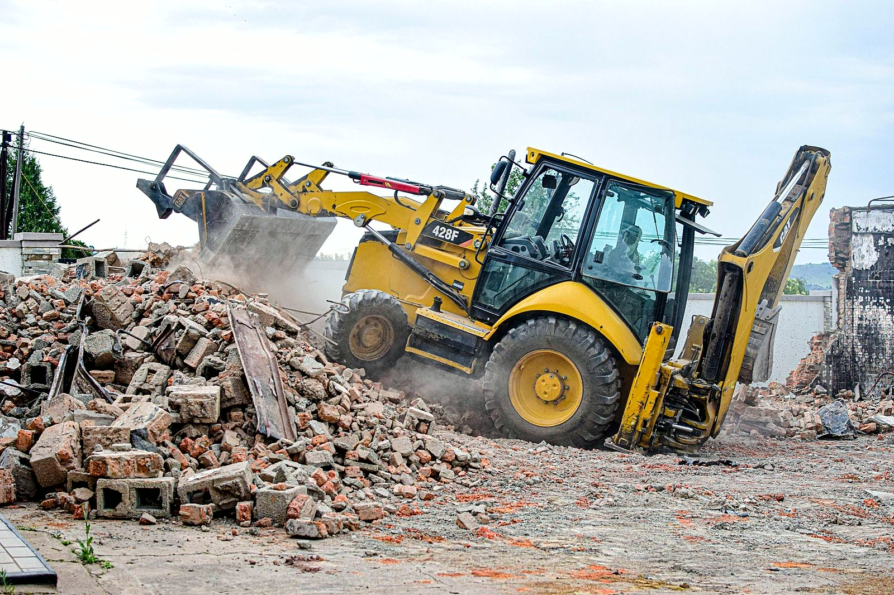
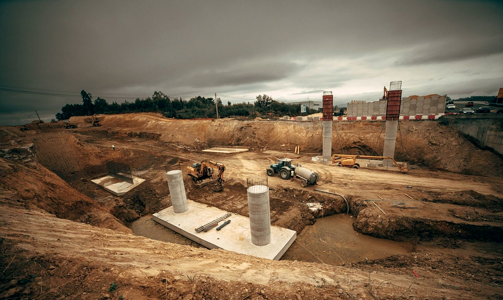
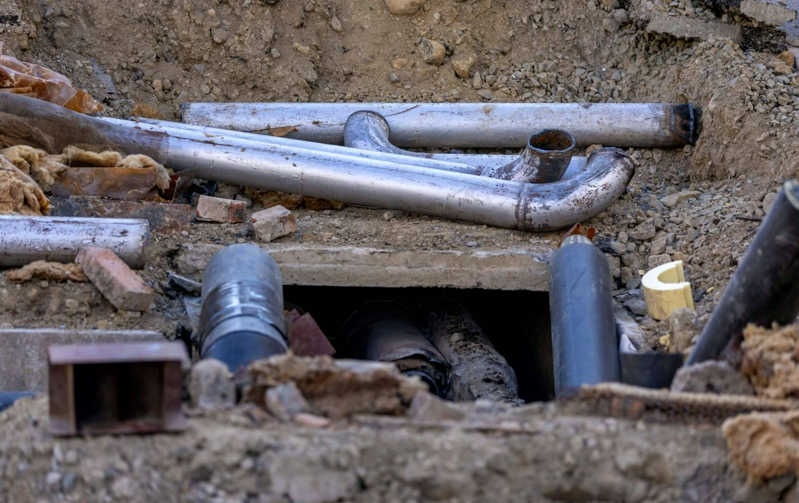
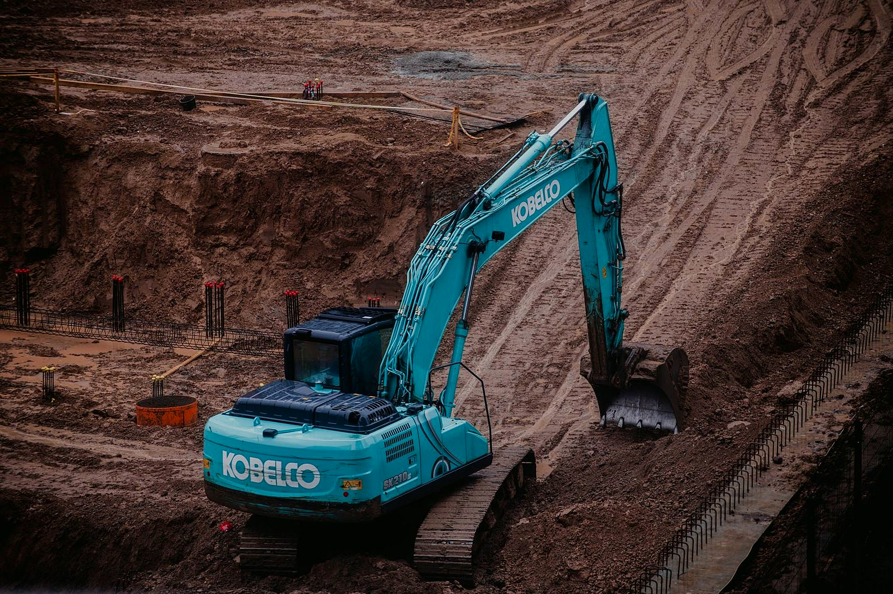
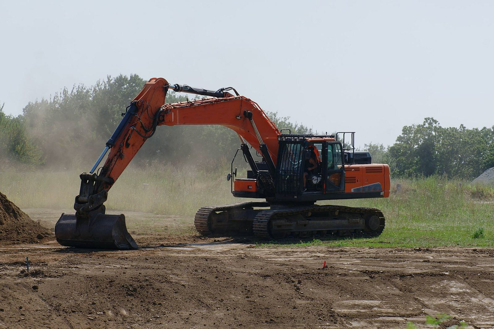
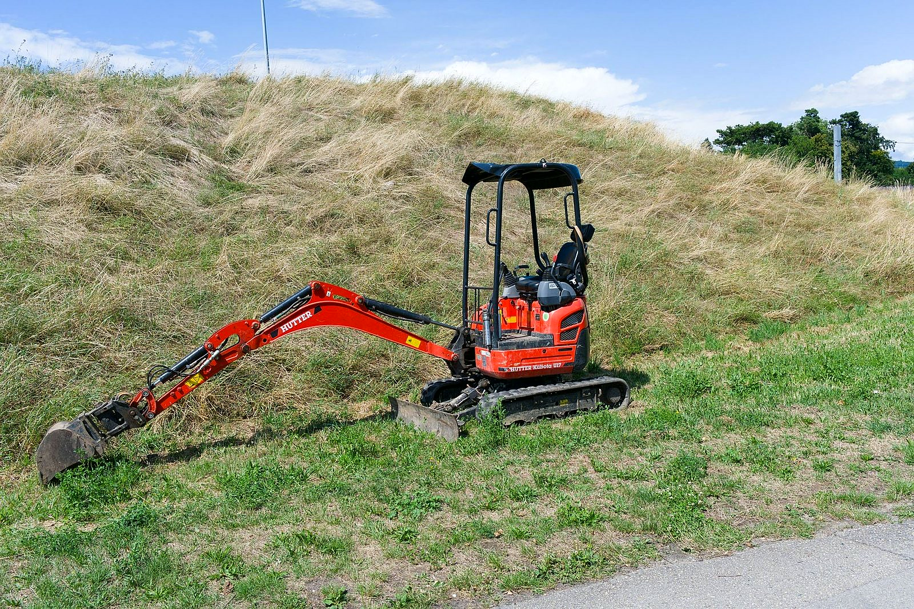
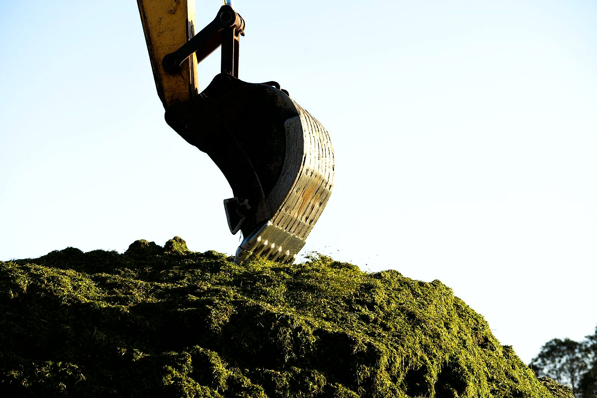

Co robimy koparko-ładowarką
Koparko-ładowarka ma łyżkę do kopania z tyłu i szeroką łyżkę ładującą z przodu. Dzięki temu na jednej działce robimy wykop, zasypkę i wyrównanie bez ściągania drugiej maszyny. Cenę podajemy po obejrzeniu terenu.

Wykopy pod fundamenty
Wybieramy grunt pod ławy i płytę fundamentową na głębokość z projektu. Ziemię odkładamy w miejscu, które wskażesz, żeby wróciła potem do zasypki.

Przyłącza i rowy
Wąskie wykopy pod wodociąg, kanalizację, prąd i drenaż, od budynku do granicy działki. Po ułożeniu rur zasypujemy rów i wyrównujemy teren.

Szamba i zbiorniki
Wykop pod szambo, przydomową oczyszczalnię albo zbiornik na deszczówkę. Po osadzeniu zbiornika zasypujemy go i równamy ziemię dookoła.

Korytowanie pod kostkę i podjazd
Zdejmujemy ziemię na głębokość pod podbudowę. Nadmiar ładujemy na przyczepę albo rozkładamy na działce, a brukarz dostaje równe koryto.

Niwelacja i wyrównanie terenu
Rozplantowanie ziemi po budowie, wyrównanie działki pod trawnik albo ogród, wyprofilowanie spadku od domu.

Załadunek ziemi i gruzu
Przednią łyżką ładujemy ziemię, piasek, kruszywo i gruz na przyczepę albo wywrotkę. Przerzucamy też hałdy z miejsca na miejsce na placu.
Która z usług Cię interesuje?
Napisz, co chcesz zrobić - odpowiemy z propozycją i wyceną.